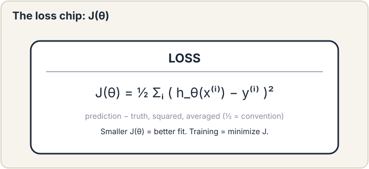
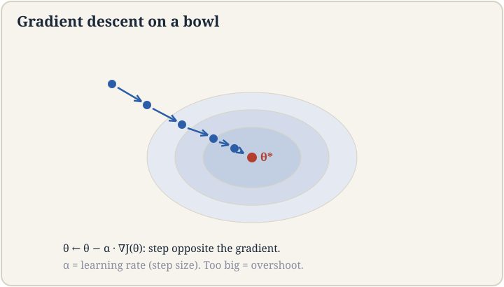
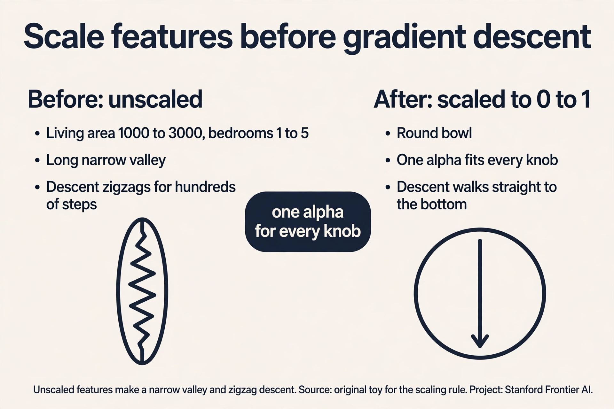
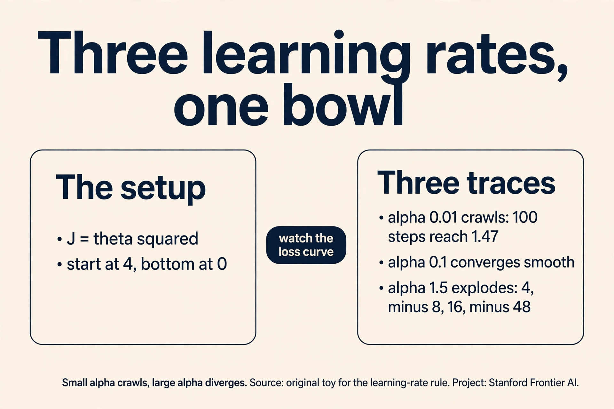
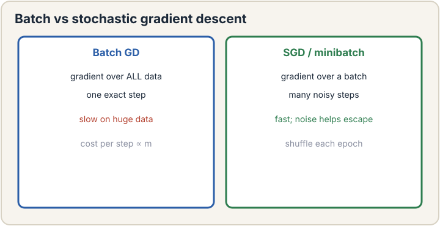
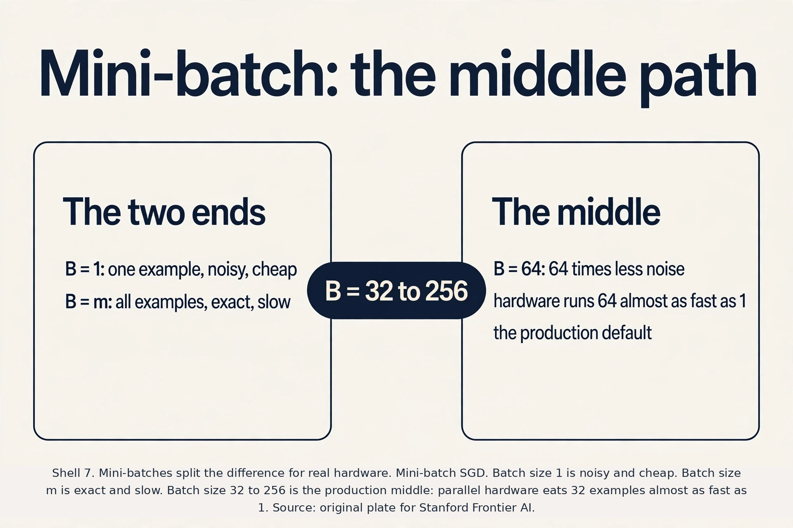
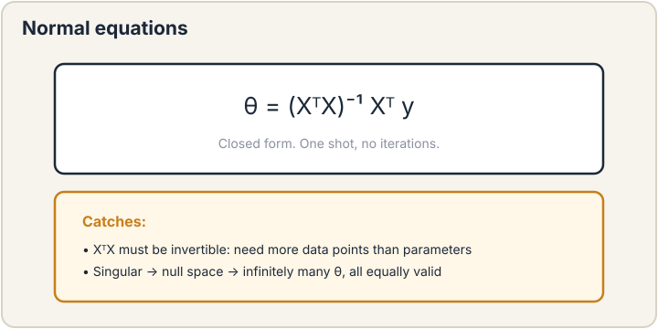

Lecture 2: Supervised Learning and Linear Regression
Video blocked (ad-blocker or local file mode).
Watch on YouTubeVideo not loading? Watch on YouTube
Original lecture. Chris Ré builds linear regression from the Ames housing data: loss, gradient descent, SGD, normal equations.
The job: price a house in Ames, Iowa
A buyer asks you: “This house has 1,800 square feet of living area. What should it sell for?” You have a spreadsheet of past sales in Ames, Iowa: each row is one house, with its living area and the price it sold for. This is the most canonical dataset in statistics, and the lecture uses it to build the entire machinery of supervised learning.
Look at the data first. The lecture insists on this: look at your data. Plot price against living area. The points slope upward: bigger houses sold for more. The cloud of points is noisy but the trend is clear. A line through the cloud would let you price any new house by reading off the line.
So the job is: find the best line through the points. “Best” needs a definition, “find” needs an algorithm. This chapter builds both from zero, and every later course reuses what is built here.
The supervised setup, piece by piece
Supervised learning has four characters. Meet each one with the housing example.
An example is one labeled pair: the input features and the correct answer. Write the i-th example as (x^(i), y^(i)). The input x^(i) is a vector of features: measurable facts about the house. For now, one feature: living area in square feet. The answer y^(i) is the target: the sale price, the thing we want to predict. The lecture’s first dataset has hundreds of such pairs.
A hypothesis is the machine’s guess at the rule mapping inputs to answers. Write it h(x). It takes a feature vector and returns a predicted price. The hypothesis is a function with knobs. The knobs are the parameters, written theta. A line has two knobs: the intercept theta_0 (where the line crosses the price axis) and the slope theta_1 (dollars per square foot). The hypothesis is:
h_theta(x) = theta_0 + theta_1 * x_1
Read it as: predicted price equals a base price plus slope times living area. With theta_0 = 50,000 and theta_1 = 100, a 1,800 sq ft house is predicted at 50,000 + 100 * 1,800 = $230,000. Different knob settings give different lines. Learning means finding the knob settings that fit the data best.
Regression is the name for this job: predicting a number. The target is continuous: prices, temperatures, wait times. (Predicting a category, like spam or not spam, is classification. It comes in lecture 3.) The Ames job is regression.

Now define “best”. The loss is a single number that scores one knob setting. For each house, compute the prediction error: how far the line’s prediction missed the true price. Square it, so misses in both directions count and big misses count a lot. Average over all houses. The lecture’s loss, with m examples, is:
J(theta) = 1/(2m) * sum over i of (h_theta(x^(i)) - y^(i))^2
This is the loss chip: the symbol this course owns and every later course reuses. Three things to notice. The square makes the loss always positive and punishes a $100,000 miss one hundred times more than a $10,000 miss. The 1/m averages over houses so the number does not grow with the dataset. The 1/2 is cosmetic: it cancels a 2 that appears when you differentiate. The lecture calls this out explicitly.
Minimizing J(theta) is the whole game of supervised learning. Pick theta, score it with J, adjust theta to lower J, repeat.
First attempt: solve it with calculus
The oldest idea: find where the loss bottoms out. At the bottom of a smooth bowl, the slope is zero. Compute the derivative of J with respect to each theta_j, set it to zero, solve for theta. For a line through points, this gives a closed-form answer called the normal equations, derived at the end of this chapter.
But there is a problem with the calculus-first approach, and the lecture leads with the other route for a reason. The closed form needs a matrix inverse. It works for lines. It does not work for neural networks, where the loss is a rugged landscape with no closed form. The field’s real workhorse is iterative: start somewhere, walk downhill, and stop at the bottom. That workhorse is gradient descent, and it trains nearly every model you will ever meet, including the giant language models of lectures 14 through 17.
Gradient descent, by hand
A gradient is the direction of steepest uphill. At any point on the loss surface, the gradient is a vector of partial derivatives, one per knob. It points uphill. So to go downhill, step the opposite way. The update rule, applied to every knob at once, is:
theta_j := theta_j - alpha * (partial derivative of J / partial theta_j)
The new knob value equals the old one minus the step size times the slope. Alpha is the learning rate, also called the step size: how big each step is. Subtract the gradient, and you move downhill. Repeat.
For linear regression the derivative has a clean form. Watch the pieces: the derivative of the squared error brings down the error term (prediction minus truth) times the feature:
theta_j := theta_j - alpha * (1/m) * sum over i of (h_theta(x^(i)) - y^(i)) * x_j^(i)
The lecture highlights the shape: error times feature, summed. The error (h - y) says how wrong the prediction was and in which direction. The feature x_j says how much knob j contributed. Big error on a house with big living area pushes the slope knob hard. This error-times-something pattern recurs in every learning rule in the course. Learn to spot it.

Now work it by hand. Three houses, one feature, and the knobs start at zero.
houses: (x=1, y=2) (x=2, y=3) (x=3, y=5)
knobs: theta_0 = 0, theta_1 = 0 alpha = 0.05
start: predictions all 0. J = 1/6 * (4 + 9 + 25) = 6.33
errors: (0-2) = -2, (0-3) = -3, (0-5) = -5
grad_0 = (1/3) * (-2 - 3 - 5) = -3.33
grad_1 = (1/3) * (-2*1 - 3*2 - 5*3) = (1/3) * (-23) = -7.67
step: theta_0 := 0 - 0.05 * (-3.33) = 0.167
theta_1 := 0 - 0.05 * (-7.67) = 0.383
after: h(1) = 0.55, h(2) = 0.93, h(3) = 1.32
J = 1/6 * (2.10 + 4.28 + 13.54) = 3.32
One step cut the loss from 6.33 to 3.32. The line is still terrible, but it moved in the right direction on every knob. Run this update hundreds of times and the knobs settle near theta_0 = 0.33, theta_1 = 1.5, the best line through the three points. That is gradient descent: many small downhill steps, each one cheap.

Subchapter: feature scaling, the hidden dial
One more dial hides inside gradient descent: the scale of the features. Take two features: living area (1,000 to 3,000 sq ft) and bedrooms (1 to 5). One gradient step moves each knob by alpha times its gradient, and the living-area gradient is about 1,000 times larger than the bedroom gradient. With one shared alpha, the area knob leaps while the bedroom knob crawls.
Picture the loss surface. Unscaled, it is a long narrow valley: steep across the area direction, flat along bedrooms. Gradient descent zigzags across the valley walls, taking hundreds of steps to drift down the flat floor. Scale both features to the range 0 to 1 (subtract the mean, divide by the range), and the valley becomes a round bowl. The same alpha now works for every knob, and descent walks straight to the bottom in a fraction of the steps.
The decision rule: always scale features before gradient descent. The normal equations do not care about scale, but every iterative method does. A model that will not converge at any alpha is often a model with unscaled features.

Where it breaks: the learning rate
Alpha is the one dial you must set, and both extremes fail. Watch each failure on the simplest bowl: J(theta) = theta^2. The gradient is 2*theta. Start at theta = 4. The bottom is at 0.
Alpha too small: alpha = 0.01. Each step moves 1 percent of the distance. Step 1: theta = 4 - 0.01*8 = 3.92. After 100 steps you are at about 1.47. After 1,000 steps, about 0.05. It converges, but you paid 1,000 steps for a one-dimensional problem. On a real model with millions of knobs, tiny alpha means training never finishes.
Alpha too large: alpha = 1.5. Step 1: theta = 4 - 1.58 = -8. Step 2: theta = -8 - 1.5(-16) = 16. Step 3: theta = -48. The steps explode: 4, -8, 16, -48, 144. Each step overshoots the bottom and lands farther out than it started. The loss does not fall. It diverges to infinity. The lecture shows this live: with alpha set too high, the loss bounces around in a widening ball and never settles.
The working range is narrow and problem-dependent. In practice you try a few values, watch the loss curve, and pick the largest alpha whose loss falls smoothly. The lecture’s rule of thumb: when the loss bounces instead of falling, your alpha is too high. Turn it down.

The key question
Each gradient step in the toy summed over all three houses. That is batch gradient descent: every step scans the full dataset. Now scale up. The lecture asks: what if the dataset is the entire internet and the job is next-word prediction? One step would need to score every page on earth before moving a single knob. That cannot work. What if each step used just one example instead of all of them?
Stochastic gradient descent
Stochastic gradient descent (SGD) uses one training example per step, picked at random. The update becomes:
theta_j := theta_j - alpha * (h_theta(x^(i)) - y^(i)) * x_j^(i)
No sum over m. No 1/m. Just one example’s error times its features. Each step is m times cheaper. With m = 1,000,000 houses, one batch step costs 1,000,000 error computations. One SGD step costs 1.
The price is noise. One example’s gradient is a jittery estimate of the true downhill direction. The knobs wiggle. The lecture shows the trace: batch descent glides smoothly to the bottom. SGD bounces around it, sometimes stepping the wrong way. But it bounces while moving: in the time batch descent takes one exact step, SGD takes one million noisy steps and gets much closer. For huge datasets the noisy fast method beats the exact slow method, every time. This is the algorithm that trains modern neural networks. The “stochastic” part is not a hack. It is the reason training at internet scale is possible at all.
One practical rule from the lecture: shuffle the data before each pass (epoch), so the machine does not learn the order of your spreadsheet. And a common trick when alpha is large: average the knobs over the bouncing trajectory to simulate a steadier estimate.

Subchapter: mini-batch, the middle path
Batch descent and SGD are two ends of a dial. The dial is the batch size B: how many examples each step uses. Batch is B = m. SGD is B = 1. The middle is mini-batch SGD: B = 32, 64, 128, or 256.
Count the tradeoff on m = 1,000,000 houses. A batch step costs 1,000,000 error computations and gives one exact direction. An SGD step costs 1 and gives one noisy direction. A mini-batch step with B = 64 costs 64 and gives a direction 64 times less noisy than SGD. In the time batch descent takes one step, mini-batch takes about 15,000 steps, each nearly as good as the exact one.
Hardware adds a second reason. Modern chips compute 32 or 64 examples almost as fast as 1, because the arithmetic runs in parallel. B = 32 costs barely more wall-clock time than B = 1 but cuts the noise by a factor of 32. This is why every production training loop uses mini-batches: the batch size is the one number that trades noise against hardware at the same time.

The normal equations: the exact answer for lines
For linear regression there is also a one-shot answer. Stack all examples into a matrix X (m rows, one per house. N+1 columns, one per knob including the intercept column of ones) and all targets into a vector y. The loss in matrix form is J(theta) = (1/2m)(X theta - y)^T (X theta - y). Set the gradient to zero and solve:
theta = (X^T X)^(-1) X^T y
These are the normal equations. No alpha, no iterations, no bouncing. One formula, exact bottom of the bowl.
Solve the toy by hand. Three houses, X has rows [1,1], [1,2], [1,3], y = [2, 3, 5].
X^T X = [[3, 6], [6, 14]] X^T y = [10, 23] det = 3*14 - 6*6 = 42 - 36 = 6 (X^T X)^(-1) = (1/6) * [[14, -6], [-6, 3]] theta_0 = (1/6) * (14*10 - 6*23) = (1/6) * (140 - 138) = 1/3 theta_1 = (1/6) * (-6*10 + 3*23) = (1/6) * (-60 + 69) = 3/2
The best line is h(x) = 1/3 + 1.5x. Predictions: 1.83, 3.33, 4.83. Errors: -0.17, -0.33, 0.17. Squared errors sum to 0.167, so J = 0.083. This is the exact minimum. Gradient descent was crawling toward this point. The normal equations jump straight to it.

Mapping back: three ways to fit a line
| Approach | How it finds theta | Cost per answer | When it wins |
|---|---|---|---|
| Gradient descent | Many small downhill steps, alpha dialed by hand | O(m*n) per step, many steps | Huge m, or loss with no closed form (neural nets) |
| SGD | One example per step, noisy but fast | O(n) per step | Internet-scale m; the only option when one pass over data is expensive |
| Normal equations | One matrix inverse, exact | O(n^3) to invert, needs X^T X invertible | Small n (hundreds of features), exact answer wanted |
Each answers a different pain. Batch descent is too slow per step on huge data. SGD fixes the per-step cost. Iterative methods need alpha tuning and many steps. The normal equations skip both when the problem is small and linear. Nothing here works on neural networks except the gradient idea itself, which is why lectures 7 and 8 exist.
What is used where
Linear regression runs in production more than any other model. It is the default baseline for pricing, forecasting, and calibration layers. Ad systems fit linear models on billions of impressions because a linear model scores in microseconds and retrains in minutes. Every serious team fits linear regression first: if a fancier model cannot beat it, the fancier model ships nothing.
The normal equations never run at scale. No production system inverts X^T X on millions of rows. The formula survives in textbooks and in small-data statistics, where n is hundreds and the exact answer is free. Scikit-learn’s LinearRegression uses an SVD solver under the hood, which is the numerically stable cousin of the normal equations, and it is the right call up to about n = 10,000 features.
SGD and mini-batch SGD run everything else. Every neural network in production trains on a variant of the mini-batch update from this lesson: PyTorch and JAX loops are mini-batch SGD with adaptive step sizes (Adam). The step you hand-computed on three houses is the great-grandfather of every LLM training run.
Watch next
Explainer: StatQuest, Linear Regression Clearly Explained. Josh Starmer fits the line by least squares with the same error-times-feature update. Watch after the gradient-descent section.
The honest price
The normal equations have two bills. First, inverting X^T X costs O(n^3) in the number of features. With n = 10,000 features, that is 10^12 operations: the “exact” answer is slower than gradient descent. Second, the inverse exists only if X^T X is invertible. If two features are redundant (living area in sq ft and in sq meters), or if m < n (fewer houses than knobs), the matrix is singular and the formula breaks: infinitely many lines fit equally well, and the equation cannot choose. Gradient descent has its own bill: the learning rate. Too small crawls, too large diverges, and the right value is found by trial, not theory. Every optimizer in this course is a negotiation with these prices.
J(theta) = 1/(2m) times the sum of squared prediction errors over all m examples. The square punishes big misses more than small ones and keeps the loss positive. The 1/m averages so the number does not grow with the dataset. The 1/2 is cosmetic: differentiating the square brings down a factor of 2, and the 1/2 cancels it, leaving clean update rules. In the hand toy, three houses gave J = 6.33 at theta = 0 and J = 3.32 after one gradient step. Squares are smooth and differentiable everywhere, so gradient descent applies directly. Absolute values have a kink at zero. Squares also punish large errors quadratically, which matches the Gaussian-noise story of lecture 3. The price: squared loss is sensitive to outliers, since one huge error dominates the sum.
Start from J(theta) = 1/(2m) sum (h_theta(x^(i)) - y^(i))^2 with h = theta^T x. Differentiate with respect to theta_j: the 1/2 cancels the 2 from the square, leaving (1/m) sum (h - y) * x_j^(i). The update is theta_j := theta_j - alpha * (1/m) sum_i (h_theta(x^(i)) - y^(i)) x_j^(i). The lecture stresses the shape: error times feature, summed over examples. On the 3-house toy with alpha = 0.05, one step moved theta from (0, 0) to (0.167, 0.383) and cut J from 6.33 to 3.32. Because the gradient is computed at the current point. If you update theta_0 first and then use the new theta_0 to compute theta_1’s update, you are stepping along a stale-mixed gradient, not the true downhill direction. Simultaneous update keeps the step honest. Implementations compute all new values into a temporary copy, then assign.
When n is small (hundreds of features) and you want the exact answer with no learning-rate tuning. The normal equations cost O(n^3) for the inverse, so at n = 10,000 features they lose to gradient descent. They also fail when X^T X is singular: redundant features or fewer examples than features give infinitely many solutions and no inverse. Gradient descent and SGD are the only options for neural networks, where no closed form exists at all. Remove redundant features, get more data, or add a ridge penalty (lecture 6): minimize J(theta) + lambda * ||theta||^2, which makes the matrix (X^T X + lambda*I) invertible. The penalty also shrinks the knobs, which fights overfitting.
Each single-example gradient is an unbiased estimate of the true gradient: wrong per step, right on average. The noise averages out over many steps while each step costs O(n) instead of O(m*n). On m = 1,000,000 examples, SGD takes a million cheap steps in the time batch descent takes one expensive step. The lecture’s trace shows SGD bouncing around the optimum while batch glides. The bouncing still arrives far sooner. Shuffling each epoch keeps the noise honest. That is mini-batch SGD, the practical middle ground: batches of 32 to 256 examples. Big enough to use hardware well and smooth the noise, small enough to step often. Full-batch on internet-scale data is still one step per eternity.
Predictions are both 0. Errors: (0-4) = -4, (0-6) = -6. J = 1/4 * (16 + 36) = 13. Grad_0 = (1/2)(-4 - 6) = -5. Grad_1 = (1/2)(-42 - 64) = (1/2)(-32) = -16. Step: theta_0 := 0 - 0.1(-5) = 0.5, theta_1 := 0 - 0.1(-16) = 1.6. New predictions: h(2) = 0.5 + 3.2 = 3.7, h(4) = 0.5 + 6.4 = 6.9. Errors: -0.3 and 0.9. J = 1/4 * (0.09 + 0.81) = 0.225. One step cut the loss from 13 to 0.225. Alpha was larger relative to the curvature, and the two points nearly determine the line. It is luck of the numbers, not a property of the method. Do not generalize from one toy: the lesson’s toy needed hundreds of steps at alpha = 0.05.
Mini-batch SGD, batch size 256 to 1024. Normal equations are dead: X^T X is 40 by 40, which is fine, but forming it over 2 billion rows every hour is the expensive part, and streaming mini-batches adapt to drift. Full-batch GD takes one step per hour, which cannot track a moving target. Pure SGD at B = 1 wastes the hardware: 256 examples cost nearly the same wall-clock as 1 on a GPU. Mini-batch is the only option that is fast, parallel, and adaptive. The O(n) per-step cost grows linearly, so steps get 1,000 times more expensive. At 40,000 dense features you need sparse representations or feature hashing, or the hourly retrain misses its window. The algorithm stays the same. The data plumbing changes.
Gradient descent uses one alpha for every knob. If living area spans 1,000 to 3,000 and bedrooms span 1 to 5, the area gradient is ~1,000 times larger, so one alpha cannot suit both: it either crawls on bedrooms or explodes on area. Scaling both to 0-1 makes the loss bowl round and one alpha works everywhere. The normal equations solve the linear system exactly in one shot. No steps means no step size, so scale is irrelevant. The price of scale-freedom is the O(n^3) inverse. Subtract the mean and divide by the range or standard deviation, per feature, computed on the training set only. Apply the same transform at prediction time. Never compute scaling statistics on the test set: that leaks test information into training.
Recap: the whole lesson on one screen
- The job. Price Ames houses from past sales. Find the best line through the points.
- The setup. Example (x, y). Hypothesis h_theta(x), a line with knobs theta. Regression predicts a number.
- The loss chip. J(theta) = 1/(2m) sum of squared errors. Smaller is better. Owned by this course, reused everywhere.
- Gradient descent. Step each knob opposite its gradient: theta_j := theta_j - alpha * error * feature, summed. Hand toy: J fell 6.33 to 3.32 in one step.
- The learning rate. Too small crawls (1,000 steps for a 1-D bowl). Too large diverges (4, -8, 16, -48). Watch the loss curve. Bouncing means turn alpha down.
- The key question. What if one step used one example instead of the whole internet?
- SGD. One example per step: m times cheaper, noisy, wins on huge data. Shuffle every epoch.
- Normal equations. theta = (X^T X)^-1 X^T y. Hand toy: the best line is 1/3 + 1.5x, J = 0.083, exact. Costs O(n^3), needs invertibility.
- The honest price. Exact answers need inverses. Inverses need small n and full rank. Iterative answers need alpha tuning.
- Feature scaling. Unscaled features make a narrow valley. Scale to 0-1 and one alpha works for every knob.
- Mini-batch. B = 32 to 256: 64 times less noise than SGD at nearly the same hardware cost. The production default.
- The pattern. Error times feature, summed, recurs in logistic regression and backprop. Learn to spot it.
Official sources and further reading
Official: - Lecture 2 video, Stanford Online YouTube: - Chris Ré builds the supervised setup on the Ames housing data, derives gradient descent and SGD, and sketches the normal equations. - Official subtitle transcript (en-US): the lecture’s spoken text. - CS229 Spring 2026 official course notes (local PDF): the full rigorous treatment, including the matrix derivation of the normal equations. - Ames Housing dataset documentation: - the real dataset behind the lecture’s example.
Caveats from these sources. The lecture presents the normal equations briefly “just for notation” and points to the course notes for rigor. The full derivation with matrix calculus lives there. The lecture’s gradient descent demo uses the Ames data with many features. The 3-house toy in this lesson is an original miniature with the same update rule. “Look at your data” is the lecture’s standing advice and applies before any fitting.
Connections to the other courses
- CS229 L03: the same loss derived from probability: Gaussian noise makes least squares the maximum-likelihood answer.
- CS229 L06: what goes wrong when the line is too flexible: bias, variance, and ridge regression fixing the singular matrix.
- CS229 L08: the gradient idea scaled up: backpropagation computes gradients for millions of knobs at the cost of one forward pass.
- CS336: gradient descent at scale: how the update actually runs on GPUs, and what MFU measures.
- CS224N L01: the same SGD loop training word vectors and language models.
Sources
- VIDEOLecture 2 video, Stanford Online YouTube
- VIDEOExplainer: StatQuest, Linear Regression Clearly Explained
- NOTESOfficial subtitle transcript (en-US)
- NOTESCS229 Spring 2026 official course notes (local PDF)
- SUPPLEMENTAmes Housing dataset documentation